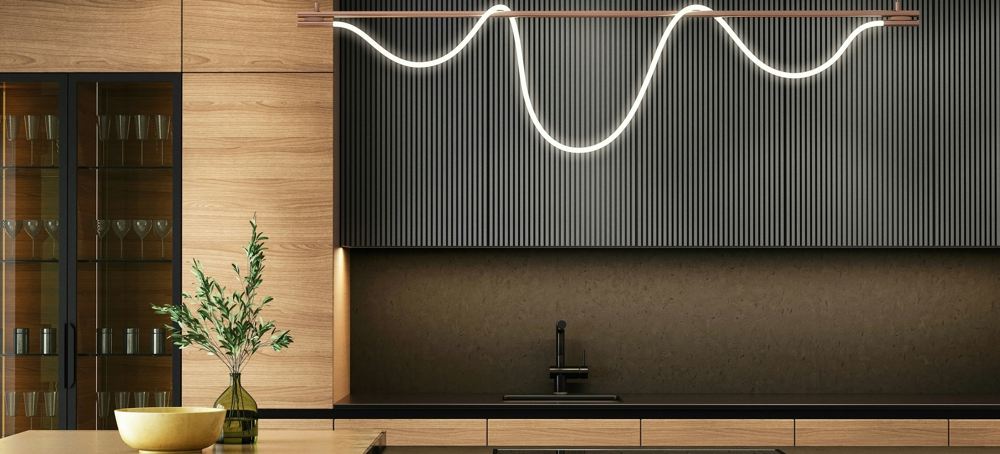
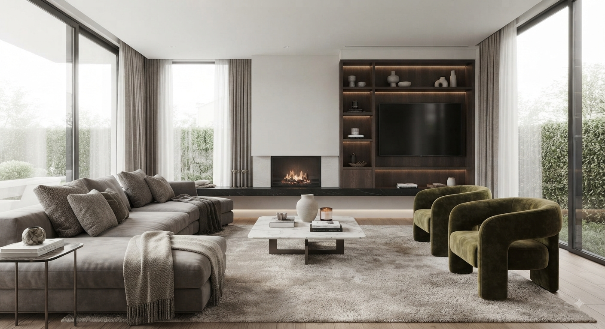
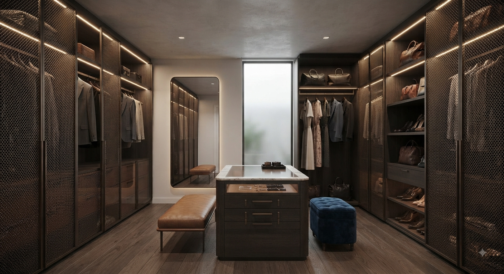

purias · lorca · murcia — desde 1970
La cocina que ya
tienes en la cabeza
La dibujamos a las medidas exactas de tu casa y te la enseñamos terminada, en 3D, antes de que decidas nada.
Ver trabajosPor qué
elegirnos
- productos de calidad ambiente cálido y acogedor, sin perder de vista unos precios ajustados
- asesoramiento sin compromiso te acompañamos siempre que lo necesites
- trato de siempre ven a la tienda y te atendemos igual que en 1970
Trabajos
realizados



El antes y
el después
desplaza para avanzar la obra
Ves tu cocina
antes de que exista
Antes de encargar un solo mueble, hacemos un proyecto en 3D de tu ambiente adaptado a las medidas reales de tu casa. No es una recreación aproximada: si tu ventana está a ochenta y siete centímetros del rincón, en el proyecto está a ochenta y siete.
Lo recorres de forma virtual desde cualquier punto de vista, cambias un acabado, mueves la isla, y lo vuelves a ver. Cuando dices que sí, ya sabes exactamente qué vas a tener.
- medidas reales Tomadas en tu casa, no estimadas
- cualquier punto de vista Recorrido virtual completo
- antes de decidir Los cambios en pantalla no cuestan nada
Lo que va
incluido
-
Financiación a medida
Pagas tu proyecto en el plazo que te encaje. Sabes la cuota exacta antes de firmar nada.
-
Montaje gratuito
El montaje va dentro del precio del mueble. No reaparece después como un extra en la factura.
-
Garantía postventa
Si algo falla cuando ya está instalado, vuelves a hablar con las mismas personas que te atendieron.
-
Servicio de interiorismo
Elegimos contigo materiales, colores y distribución de todo el ambiente, no solo de los muebles.
-
Productos exclusivos
Trabajamos series y acabados que no vas a encontrar en una gran superficie.
-
Diseño 3D
Recorres tu ambiente terminado, a medidas reales, antes de confirmar el pedido.
Cincuenta y cinco años
en el mismo sitio
Muebles Purias es una empresa familiar fundada en 1970.
Te atendemos de forma personalizada y no dejamos de evolucionar para ofrecerte las tendencias y los estilos más nuevos, esos que hacen que el diseño y el espacio encajen.
así eran las cocinas de entonces
Pásate por
la tienda
Trae las medidas o las fotos que tengas. Con eso empezamos el proyecto el mismo día.
Ctra. de Pulpí S/N
30813 Purias · Lorca, Murcia